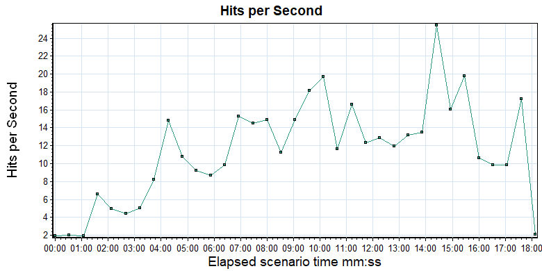

| Hits per Second |
|
|

| Color | Scale | Measurement | Graph Minimum | Average | Graph Maximum | Graph Median | Graph Std. Deviation |
| 1 | Hits | 1.938 | 11.634 | 25.438 | 11.656 | 5.534 |
| Description: Displays the number of hits made on the Web server by Vusers during each second of the load test. This graph helps you evaluate the amount of load Vusers generate, in terms of the number of hits. |